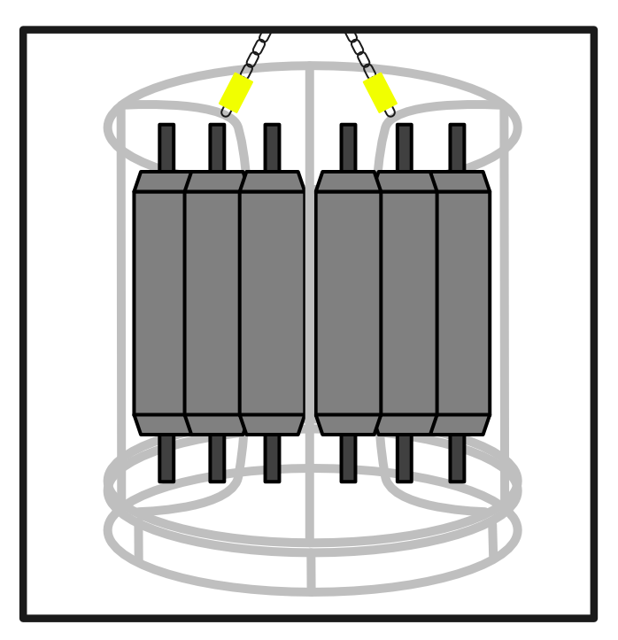
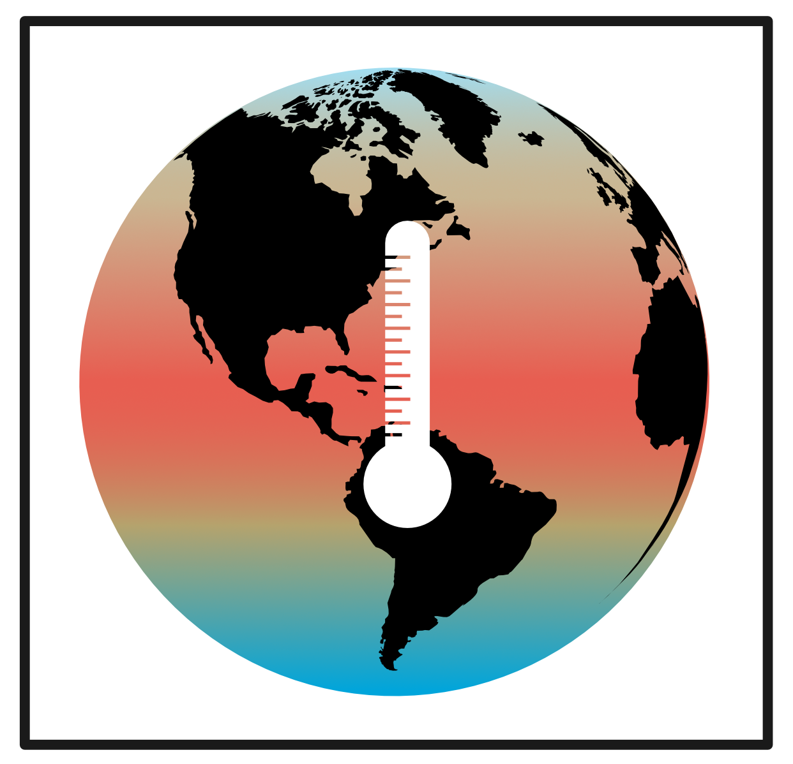
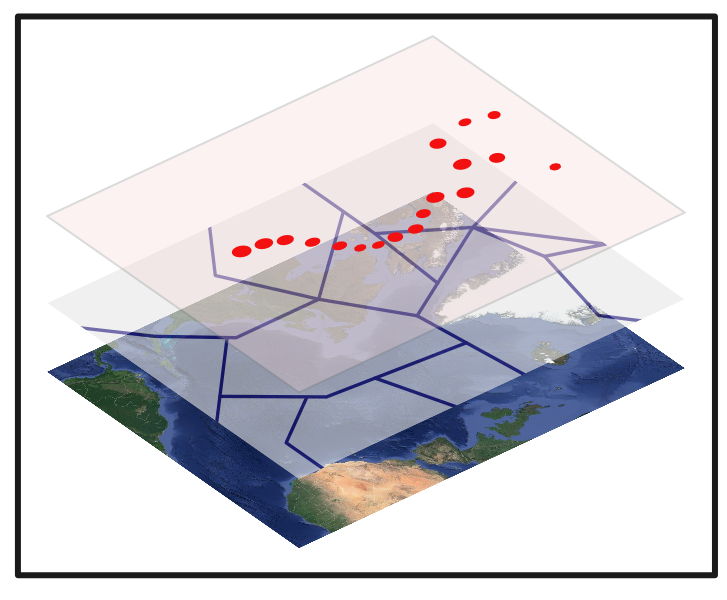
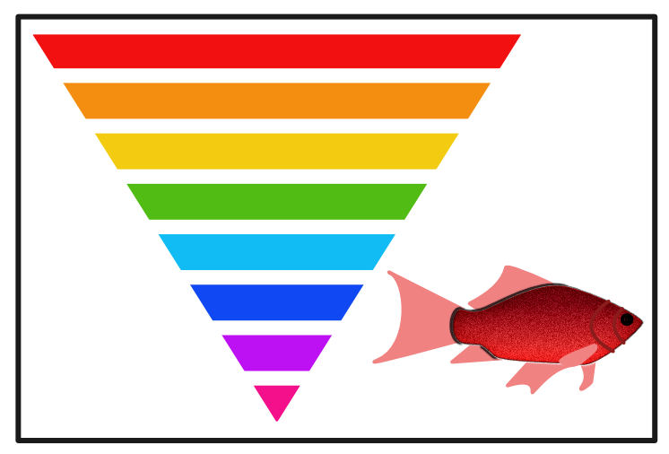
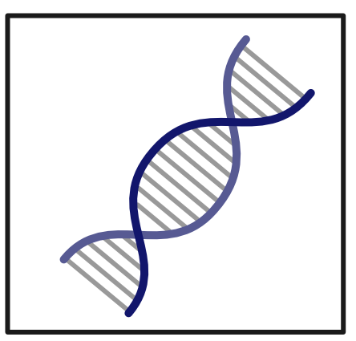
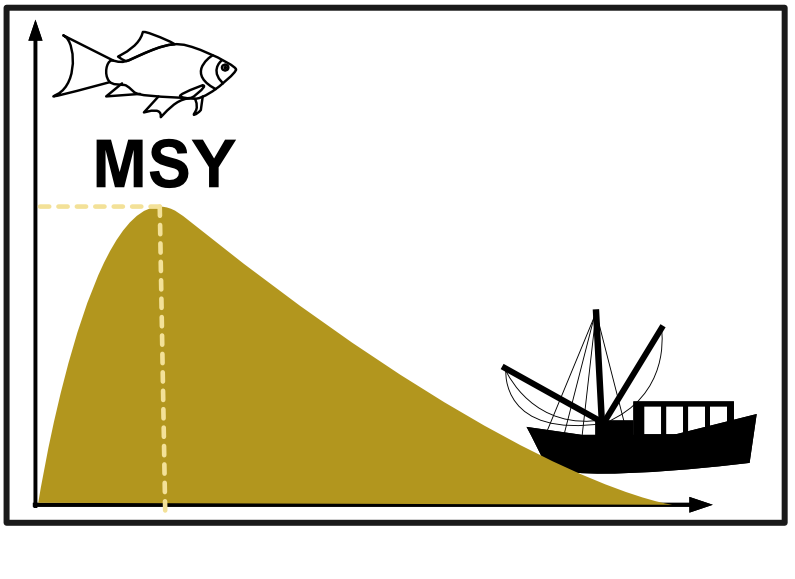
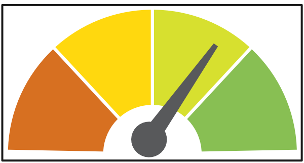
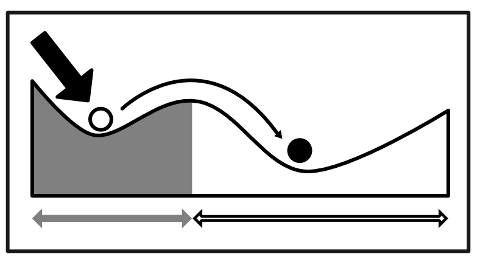
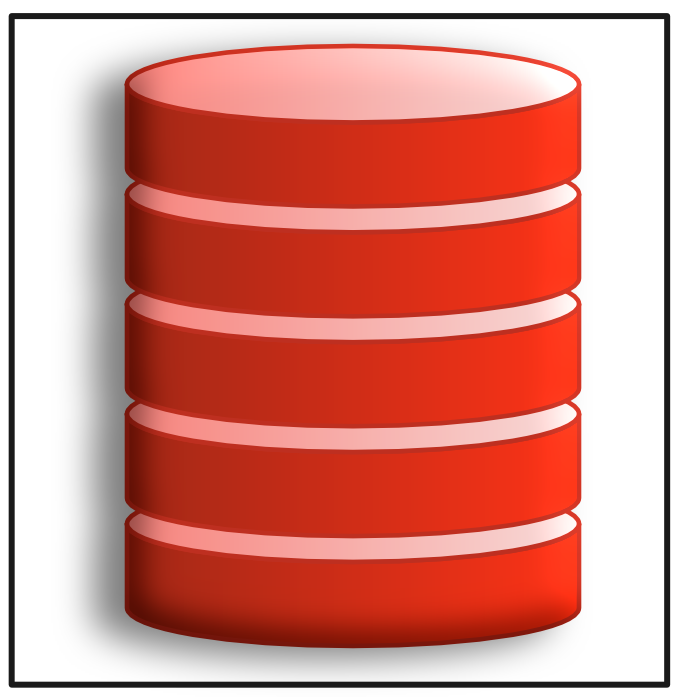

Last update: 2019, Jan. 7
Databases
In the following you find a list of databases and repositories that provide different type of marine data for specific regions free of charge. The list is not intended to be exhaustive but more to give you an easy start and many of these database can be webscraped directly from within R using specific packages that I also list here. If you feel there is any global or regional database missing where users can download marine data, don’t hesitate to contact me!
General databases
PANGAEA - Data Publisher for Earth & Environmental Science: www.pangaea.de
PANGAEA is a digital library for data from earth system research. PANGAEA archieves published Earth & Environmental Science data under the following subjects: agriculture, atmosphere, biological classification, biosphere, chemistry, cryosphere, ecology, fisheries, geophysics, human dimensions, lakes & rives, land surface, lithosphere, oceans, and paleontology. Data sets include a metadata description with a bibliographic citation, persistently identified using a DOI. The system is open to any project or individual scientist for data archiving and publishing. The system is hosted by AWI and MARUM.
→ The data can also be accessed from within R using the package pangaear.
ICES Data Centre http://ices.dk/marine-data/data-portals/
ICES has a well established Data Centre , which manages a number of large dataset collections related to the North Atlantic Ocean and adjacent Seas.
- Oceanography
- Biodiversity
- Contaminants, biological effects, and biological community data
- Fish eggs and larvae database
- Fish trawl survey datasets (DATRAS)
- Fish predation
- Historical plankton
- Impulsive underwater noise collates data
- Vulnerable Marine Ecosystems hosts data on deep-water VMEs in the North Atlantic
→ The DATRAS data can also be accessed from within R using the package DATRAS package that can be downloaded from here or following this code.
AODN Portal - Australian Ocean Data Network (AODN): https://portal.aodn.org.au/
The gateway to Australian marine (biological, checmical, physical) and climate science data. The AODN Portal provides access to all available Australian marine and climate science data and provides the primary access to IMOS data including access to the IMOS metadata (IMOS is a national collaborative research infrastructure, supported by Australian Government).
WHOI Data www.whoi.edu/data/
A great collection of regional to global data and repositories based at Woods Hole Oceanographic Instituions (WHOI) (e.g. float, mooring, seafloor, oceanic and climate data)

Oceanographical data
World Ocean Database (WOD) www.nodc.noaa.gov/OC5/WOD/pr_wod.html
The WOD is an NCEI product and an IODE (International Oceanographic Data and Information Exchange) project. The data stored covers oceanographical and recently also plankton data from regional seas around the world. The data can be queried using the WODselect tool.
IODE Ocean Data Portal (ODP) - International Oceanographic Data and Information Exchange: www.oceandataportal.org
The International Oceanographic Data and Information Exchange (IODE) programme of the “Intergovernmental Oceanographic Commission” (IOC) of UNESCO , through its distributed network of National Oceanographic Data Centres (NODCs), established the Ocean Data Portal (ODP) to facilitate seamless access to marine data/services and to promote the exchange and dissemination of marine data and services.
OceanSITES www.oceansites.org
A worldwide system of deepwater reference stations. The mission of OceanSITES is to collect, deliver and promote the use of high-quality data from long-term, high-frequency observations at fixed locations in the open ocean.
NOAA Data Buoy Center (NDBC) www.ndbc.noaa.gov
The NDBC is a part of the National Oceanic and Atmospheric Administration’s (NOAA) National Weather Service (NWS). NDBC designs, develops, operates, and maintains a network of data collecting buoys and coastal stations. The data can be requested from their website.
EOSDIS Ocean Data https://earthdata.nasa.gov/discipline/ocean
The ocean database of NASA’s Earth Observing System Data and Information System (EOSDIS) encompasses geophysical parameters that characterize the oceans (e.g., temperature, salinity, sea surface topography, chemistry/biology optics) as well as those physical processes operating within the Earth’s oceans and at its surface.
OceanColor https://oceancolor.gsfc.nasa.gov/data/overview/
This website serves as the primary data access portal to the NASA satellite Ocean Biology (OB) data produced or collected under NASA’s Earth Observing System Data and Information System (EOSDIS).
USGS Earth Explorer https://earthexplorer.usgs.gov/
The USGS Earth Explorer is a similar tool to the USGS Global Visualization Viewer (GloVis) in that users can search catalogs of satellite and aerial imagery.
North Atlantic and adjacent seas
ICES Data Centre - Ocean http://ices.dk/marine-data/data-portals/Pages/ocean.aspx
Oceanographic data which includes temperature, salinity, oxygen, chlorophyll a, and nutrients measurements are made available through the OCEAN web applications.
Baltic Sea
IOWDB - Oceanographic database of the IOW: https://odin2.io-warnemuende.de
The database of the German IOW (Institut fuer Ostseeforschung Warnemuende) provides >73 mio. oceanographic readings and metadata of mainly the Baltic Sea as well as phyto- and zooplankton time series. It can be accessed through the interactive navigation tool ODIN2.
BED - Baltic Environmental Database: www.balticnest.org/bed
The database contains data on bathymetry, hydrograpghy, nutrients, sediment data, atmospheric nutrient input, and runoff data. It can be accessed through the DAS (Data Assimilation System) software or through a data portal query written in the address bar of the internet browser to access the data directly from distributed databases (see here).

Climatological data
CCAFS-Climate http://ccafs-climate.org
The CCAFS-Climate data portal provides global and regional future high-resolution climate datasets that serve as a basis for assessing the climate change impacts and adaptation. The data distributed here are in ARC GRID, and ARC ASCII format, in decimal degrees and datum WGS84.
→ The data can also be accessed from within R using the package ccafs.
NCAR Climate Data Guide https://climatedataguide.ucar.edu
The database provides >200 global and regional data sets covering the Atmosphere, Ocean, Land and more. You can find on the website further metadata, figures and expertise on the strengths, limitations and applications of climate data.
NOAA Climate Indices www.esrl.noaa.gov/psd/data/climateindices/
Monthly atmospheric and ocean time series of global and regional climate indices provided by the NOAA (National Oceanic and Atmospheric Administration) Earth System Research Laboratory’s Physical Sciences Division.
NOAA Gridded Climate Datasets www.esrl.noaa.gov/psd/data/gridded/index.html
Regional and global time series covering the Atmosphere, Ocean, Land can be downloaded as netCDF files.
→ Some of NOAA’s data sources can be webscraped using the R package rnoaa. An online tutorial for this package can be found here: https://ropensci.org/tutorials/rnoaa_tutorial/

Geospatial data
Marine Regions www.marineregions.org
Marine Regions is a standard list of marine georeferenced place names and areas. It integrates and serves geographic information from the VLIMAR Gazetteer and the MARBOUND database and proposes a standard of marine georeferenced locations, boundaries and regions. You can find under ‘Downloads’ various global and regional shapefiles (e.g. on ICES, OSPAR, FAO, NAFO regions).
→ The data can also be accessed from within R using the package mregions.
Natural Earth www.naturalearthdata.com
Natural Earth is a public domain map dataset available at 1:10m, 1:50m, and 1:110 million scales. Featuring tightly integrated vector and raster data.
→ The data can also be accessed from within R using the package rnaturalearth.
North East Atlantic
ODIMS - OSPAR Data & Information Management System: https://odims.ospar.org
ODIMS is an online tool providing a single point of access to all the data and information gathered through OSPAR’s Joint Assessment and Monitoring Programme across the different thematic work areas of the Convention. You can access here OSPAR’s geospatial maps, data and metadata.
Baltic Sea
HELCOM Map and Data Service
All spatial datasets used and produced by HELCOM in its assessments can be accessed and downloaded from HELCOM Metadata catalogue and viewed in HELCOM Map and Data Service.

Taxonomy, Traits & Biogeography
General
WoRMS - World Register of Marine Species: www.marinespecies.org
An authoritative classification and catalogue of marine names in the world oceans. Contains mostly taxonomic data, but also trait data.
→ The data can be accessed from within R using the package worrms.
Marine Species Identification Portal http://species-identification.org
This site offers information on thousands of different species in the world’s oceans and seas.
ITIS - Integrated Taxonomic Information System: www.itis.gov
Authoritative taxonomic information on plants, animals, fungi, and microbes of North America and the world.
→ The data can also be accessed from within R using the package ritis.
Catalogue of Life www.catalogueoflife.org/
Website combined with ITIS. It consists of a single integrated species checklist and taxonomic hierarchy. The Catalogue holds essential information on the names, relationships and distributions of over 1.8 million species.
Encyclopedia of Life http://eol.org/
Database with search function. Aim: to include all species on earth.
Encyclopedia of Life TraitBank http://eol.org/info/516
The TraitBank is a searchable, comprehensive, open digital repository for organism traits, measurements, interactions and other facts for all taxa across the tree of life. It currently features over 11 million records related to more than 330 attributes for 1.7 million taxa obtained from over 50 data sources.
→ The data can also be accessed from within R using the package traits.
MARBEF Data system - ERMS www.marbef.org/data/erms.php
The European Register of Marine Species (ERMS) is an authoritative taxonomic list of species occurring in the European marine environment, defined as up to the strandline or splash zone above the high tide mark and down to 0.5 (psu, ppt) salinity in estuaries. The register is actively maintained and daily updated in the framework of the MarBEF EU Network of Excellence by a board of taxonomic editors, which are world experts on the taxonomy of their relevant taxa. ERMS is served from a relational database. The most recent version of the data will always be available through a web interface.
Census of Marine Life www.coml.org/
The Census of Marine Life is a 10-year (2000-2010) international effort to assess the diversity (how many different kinds), distribution (where they live), and abundance (how many) of marine life.
OBIS - Ocean Biogeographic Information System: www.iobis.org
OBIS is a global open-access data and information clearing-house on marine biodiversity for science, conservation and sustainable development. Created by the Census of Marine Life, OBIS is now part of the Intergovernmental Oceanographic Commission of UNESCO, under its International Oceanographic Data and Information Exchange programme.
→ For extracting and enriching OBIS data with R see here.
GBIF - Global Biodiversity Information Facility: www.gbif.org
GBIF is an international network and research infrastructure funded by the world’s governments and aimed at providing anyone, anywhere, open access to data about all types of life on Earth. → The data can also be accessed from within R using the package rgbif
ReefBase - A global information system for coral reefs: www.reefbase.org
The database contains online data and information on the location, status, threats, monitoring, and management of coral reefs in over 120 countries and territories.
IUCN Red List www.iucnredlist.org
The IUCN Red List API is a global database of threatened and endangered species.
→ The data can also be accessed from within R using the package rredlist.
Fish
FishBase www.fishbase.org
FishBase is a global biodiversity information system on finfishes. Its initial goal to provide key facts on population dynamics for 200 major commercial species has now grown to having a wide range of information on all species currently known in the world: taxonomy, biology, trophic ecology, life history, and uses, as well as historical data reaching back to 250 years. At present, FishBase covers >33,000 fish species compiled from >52,000 references in partnership with >2,000 collaborators: >300,000 common names and >55,000 pictures.
→ The data can also be accessed from within R using the package rfishbase.
Plankton
AlgaeBase www.algaebase.org
AlgaeBase is a global algal database of taxonomic, nomenclatural and distributional information.
SAFHOS CPR - SAHFOS Continuous Plankton Recorder survey database: www.cprsurvey.org/data/our-data/
The SAHFOS CPR survey is the longest and most geographically extensive marine biological survey in the world. The CPR survey has been in operation in the North Sea and North Atlantic since 1931 and has systematically sampled up to 500 planktonic taxa from the major regions of the North Atlantic at a monthly resolution.
COPEPOD - Coastal and Oceanic Plankton Ecology, Production, and Observation Database: www.st.nmfs.noaa.gov/copepod/
A global plankton database that contains over 400,000 observations of copepods, along with other zooplankton, phytoplankton, and microbial plankton taxa.
PlanktonPortal www.planktonportal.org/
The Zooniverse is a collection of web-based citizen science projects that use the efforts of volunteers to help researchers deal with the flood of data that confronts them.
EcoTaxa http://ecotaxa.obs-vlfr.fr
EcoTaxa is a web application dedicated to the visual exploration and the taxonomic annotation of images that illustrate the beauty of planktonic biodiversity.
PLANKTON*NET http://planktonnet.awi.de/
PLANKTONNET is an open access repository for plankton-related information provider at the Alfred Wegener Institute for Polar and Marine Research is . It covers all types of phytoplankton and zooplankton from marine and freshwater areas. Different taxa image information as well as taxonomic descriptions can be archived. PLANKTONNET also contains a glossary with accompanying images to illustrate the term definitions.
Northeast Pacific Ichthyoplankton Information System (IIS) https://access.afsc.noaa.gov/ichthyo/index.php
Database of ichthyoplankton collected by the Alaska Fisheries Science Center (AFSC) Recruitment Processes Program, which includes Ecosystems & Fisheries-Oceanography Coordinated Investigations (Eco-FOCI). The site can be used to either identify fish eggs and larvae by using known data such as meristics, distribution, and illustrations of developmental stages or as a source of original data on the early life history stages of fishes of the Northeast Pacific Ocean, Bering Sea, Chukchi Sea, and Beaufort Sea.
Larvalbase http://larvalbase.org/
World wide database of fish eggs and larvae, descriptions and pictures.
Corals
Coral Trait Database https://coraltraits.org
The Coral Trait Database is a growing compilation of scleractinian coral life history trait, phylogenetic and biogeographic data. The database contains >60,000 coral observations with >10,000 trait entries of >150 traits for >1500 coral species. Most of these entries are for shallow-water, reef-building species.
→ The data can also be accessed from within R using the package traits.
Invasive Species
GISD - Global Invasive Species Database: www.iucngisd.org/gisd/
A free, online searchable source of information about alien and invasive species that negatively impact biodiversity managed by IUCN.
→ The data can also be accessed from within R using the package originr.
GRIIS - Global Register of Introduced and Invasive Species: www.griis.org
GRIIS represents an updated version of GISD with country-wise validated, verified and annotated inventories of introduced and invasive species.
→ Similar to the GISD, GRIIS data can be accessed from within R using the package originr.
Baltic Sea Alien Species Database www.corpi.ku.lt/nemo/
The database provide a qualified reference system on alien species for the Baltic Sea area and information on their biology, vectors of introduction, spread, impacts on environment and economy.

Genetic databases
BOLD - Barcode Of Life Data System: http://boldsystems.org
Advancing biodiversity science through DNA-based species identification. BOLD is a cloud-based data storage and analysis platform developed at the Centre for Biodiversity Genomics in Canada. It consists of four main modules, a data portal, an educational portal, a registry of BINs (putative species), and a data collection and analysis workbench.
→ The data can also be accessed from within R using the package bold.
Tara Oceans Data Portal www.taraoceans-dataportal.org
Tara Expeditions are global scientific voyages that probe morphological and molecular diversity, evolution and ecology of marine plankton to explore how they are impacted by changes in the Earth’s climate. The TARA Data Portal is meant to be a resource for scientists or other users wishing to know which datasets have been collected and generated by the TARA Oceans / TARA Polar Circle expeditions.

Fish stock assessments & Fishery data
stockassessment.org - Stock assessments of ICES fish stocks: www.stockassessment.org/login.php
stockassessment.org provides an interface for state-space assessment models (SAM) used for several assessments within ICES. This online user interface allows easy access to all aspects of the assessment model (figures, data, R code).
RAM Legacy Stock Assessment Database http://ramlegacy.org/
This database is a compilation of stock assessment results for commercially exploited marine populations from around the world. It currently assessment data from N.W. Africa,the Mediterranean Sea, Chile, and data sets on Pacific salmon. → You can access all fishery statistical time series through the software FishStatJ, a Java-based desktop application.
FAO Global Fishery Database www.fao.org/fishery/statistics/collections/en
The FAO developed and maintained since the 60s a set of global fishery statistics databases serving two main goals: support to fishery resources monitoring and assessment and constant review of the contribution of the fishery sector to the national economy and nutrition situation. The Fishery Statistics programme currently maintains 10 global time series and 5 regional capture time series.
→ You can access the database from within R using the package ramlegacy.
ICES Data Centre www.ices.dk/marine-data/dataset-collections/Pages/Fish-catch-and-stock-assessment.aspx
You can find here data on catches in FAO area 27 by country, species, area and year.
Eurostat - EU Fishery statistics: https://ec.europa.eu/eurostat/web/fisheries/data
The Eurostat Fisheries database contains catch data by fishing region, on aquaculture production, on total production, on landings in EEA ports, on trade in fishery products, on the EEA fishing fleet.
OpenFisheries www.openfisheries.org
The OpenFisheries.org project consolidates global fisheries datasets and stores them in the Global Fisheries REST API.
→ This API can be accessed from within R using the package rfisheries.
Sea around us www.seaaroundus.org/
Database about all kind of organisms. present fisheries and fisheries-related data at spatial scales that have ecological and policy relevance, such as by Exclusive Economic Zones, High Seas, or Large Marine Ecosystems.

Ecological indicators
HELCOM indicators www.helcom.fi/baltic-sea-trends/indicators/
Time series of Baltic Sea core indicators developed by HELCOM for the EU Marine Strategy Framework Directive (MSFD) and the Baltic Sea Action Plan can be accessed through the HELCOM indicator website.
OSPAR indicators
The common indicators agreed by OSPAR for assessing the status of biodiversity in the North-East Atlantic cover marine mammals, seabirds, fish communities, seafloor habitats, pelagic habitats, non-indigenous species and food webs. You can access the indicator time series through OSPAR’s Data & Information Management System (ODIMS) under ODIMS Source Data files > IE2017.
MARMONI indicator database www.sea.ee/marmoni/marmoni_pulk/start_indicator_database.html
Database on indicators for assessing the state of marine biodiversity in the Baltic Sea
DEVOTES Catalogue of Indicators and DEVOTool www.devotes-project.eu/devotool/
A Catalogue listing available indicators suitable for addressing the EU Marine Framework Strategy Directive biodiversity related descriptors (D1 Biological diversity, D2 Non-indigenous species, D4 Food-webs and D6 Seafloor integrity). Indicators are accompanied by meta-information to evaluate their relevance for MSFD implementation purposes. The catalogue can be accessed through the DEVOTES software application DEVOTool.

Regime shifts
Marine Regime Shifts Dataset www.regimeshifts.org
Database of marine, global regime shifts described up to 2013, provided by the Stockholm Resilience Centre. The data contains three adjacency matrices for i) regime shifts and drivers, ii) regime shifts and ecosystem services, and iii) drivers and categories of analysis.

Other Repositories
KNB - Knowledge Network for Biocomplexity https://knb.ecoinformatics.org
KNB is an international repository intended to facilitate ecological and environmental research (terrestrial, freshwater, and marine). The foundation of the KNB is the rich, detailed metadata provided by researchers that collect data, which promotes both automated and manual integration of data into new projects. KNB is a DataOne member node.
DataONE - Data Observation Network for Earth www.dataone.org
DataONE is a community driven project providing access to data across multiple member repositories, supporting enhanced search and discovery of earth and environmental data. The default software for search and discovery of data and metadata within DataONE is DataONE Search.
Data packages in R
Oceanographic data can be found in ocedata. This package supplies some large oceanographic datasets useful for the
ocepackage, e.g. world coastlines at medium and fine-scale resolution, time series of NASA/GISS land-ocean temperature index, Gulf Stream position or Annually-averaged sea-surface temperature and salinity from the World Ocean Atlas (WOA).Fisheries-related data sets are available in the packages FSA, FSAdata and fishmethods. A good overview of datasets in these package is given by Derek Ogle’s website fishR.